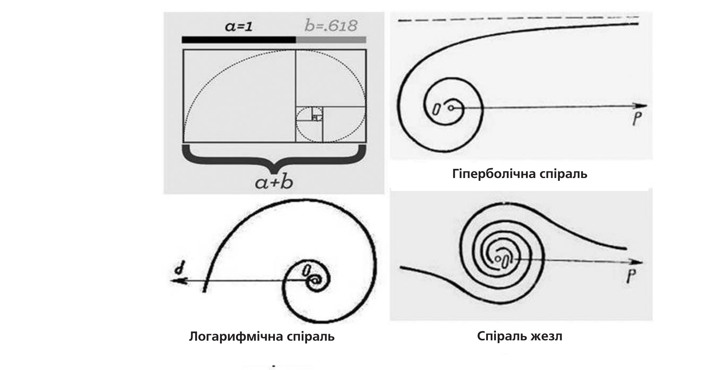
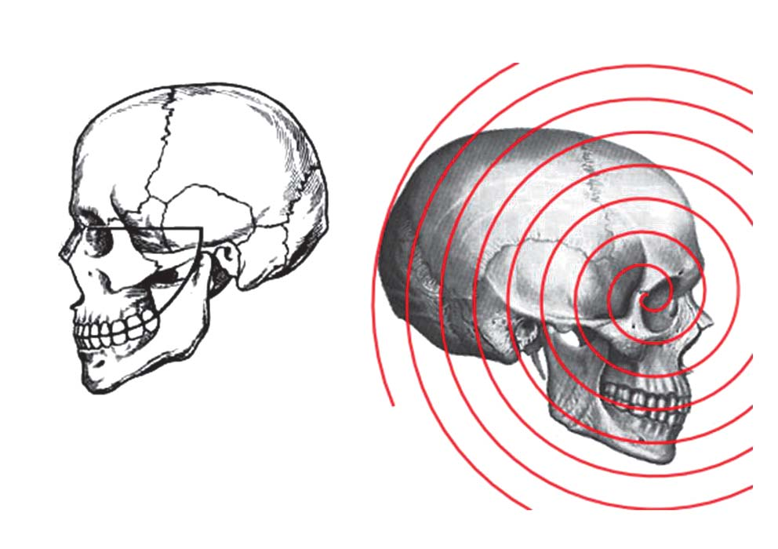
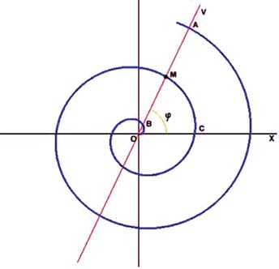
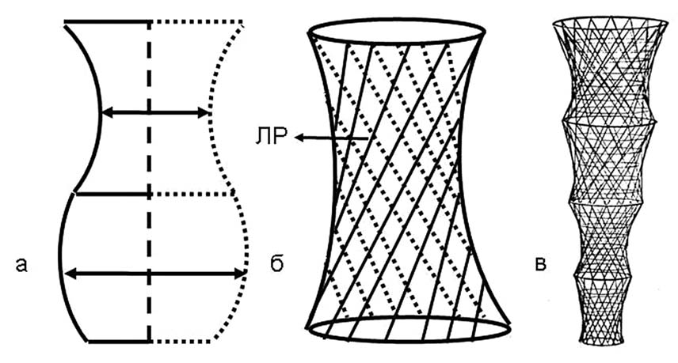
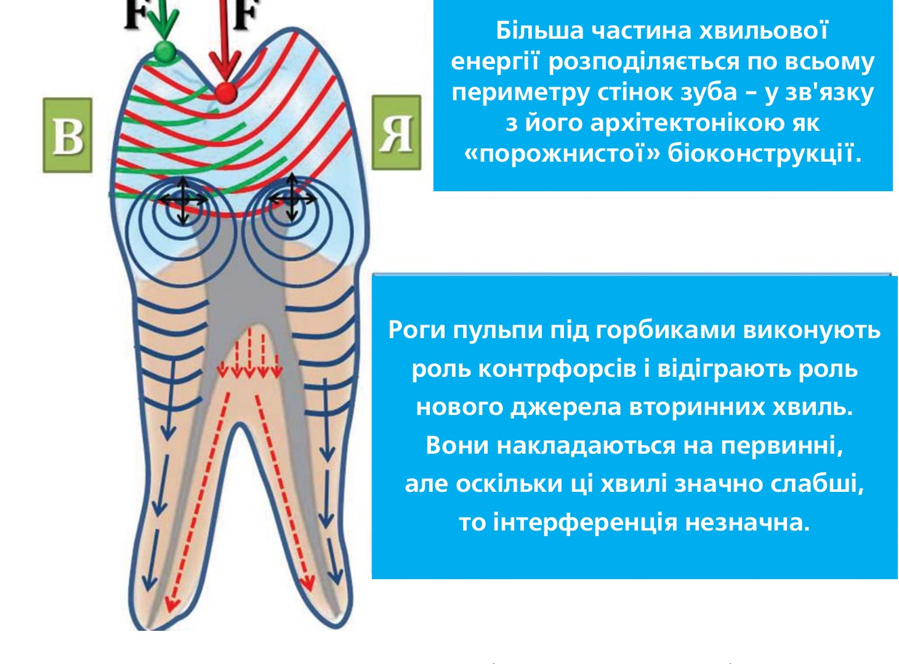
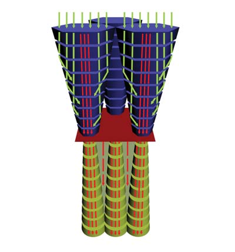

Точка зору · журнал «ДентАрт» 2015 №3
Філотаксис і біомеханіка зубів. Частина IV
PHYLLOTAXIS AND BIOMECHANICS OF TEETH. PART IV
Частину I читайте в «ДентАрті» №2/2013, частину II — у «ДентАрті» №4/2013, частину III — у «ДентАрті» №2/2015.
Універсальний закон морфофізіологічної полярності клітин
«Природа знову і знову виявляється набагато багатшою від наших уявлень про неї, а незліченні «сюрпризи», які вона підносить дослідникам, роблять її вивчення захоплююче цікавим».
В.А. Амбарцумян
Полярністю називають відмінність між протилежними точками (полюсами) організму, органу або окремої клітини, яка виявляється і в фізіологічних функціях, наприклад в утворенні, пересуванні та нагромадженні різних речовин. Ці особливості настільки глибоко закладені у спадковій природі організму, що не змінюються навіть при зміні навколишніх умов.17 Так, у період ембріонального розвитку зубів поряд з надходженням мінеральних та інших речовин в енамелобласти (адамантобласти) з боку судин зубного мішечка на початку амелогенезу спостерігається зміна морфологічної і фізіологічної полярності цих клітин. До початку амелогенезу базальні кінці енамелобластів, в яких містилися ядра, були звернені до зубного сосочка, а їх вершини з апаратом Гольджі — до пульпи емалевого органа. Сутність цього цікавого явища, описаного Г.І. Ясвоїним та іншими авторами наприкінці 20-х — на початку 30-х років минулого століття, полягає в тому, що як тільки енамелобласти розпочинають утворення емалі, у кожній клітині апарат Гольджі починає переміщуватися від зовнішнього полюса до основи — у бік дентину, в той час як ядро з внутрішнього відділу клітини рухається у протилежному напрямку.8 Прийнято вважати, що зміна полярності цих клітин пов'язана з відкладенням на вершині зубного сосочка шару дентину, який немовби відрізає енамелобласти від їхнього колишнього джерела живлення, яким були кровоносні судини зубного сосочка (Орбан, 1953).8, 9 У природі найбільшої складності полярність досягає у вищих рослин, вона знаходить вияв у будові і роботі окремих тканин і клітин, у здатності до регенерації втрачених частин, але типовий поділ на основу і верхівку спостерігається вже у водоростей.
Важливо зазначити, що ауксини, які синтезуються у верхівці пагона, перетікають провідними шляхами в тканинах до основи, збуджуючи діяльність камбію (аналог емалево-дентинного з'єднання в зубах), і, накопичуючись у певних місцях, вони здатні викликати утворення коренів.17 Імовірно, подібний механізм має місце і в розвитку коренів зубів людини. Таким чином, більш поглиблене вивчення загальних еволюційних принципів розвитку і функціонування рослин і зубів здатне наблизити нас до відповідей на багато питань ембріо-морфогенезу тканин і органів зубощелепно-лицьової системи і людини в цілому.
Ріст і формоутворення за законом спіральної симетрії
При уважному вивченні анатомічної форми голови ми виявляємо різноманітні криволінійні поверхні в структурній організації зубощелепної системи, котрі нагадують спіралі, які утворюються шляхом формування і росту тканин і органів, що обумовлено функціональною доцільністю і економічністю витрат живого будівельного матеріалу. Спіральні симетрії широко розповсюджені у природі, де спіраль виявляє себе як еталон компактності (рис. 2, 5, 7). Як вказує М.А. Заренков (2009), «з широкої різноманітності математичних спіралей натуралісти освоїли архімедову (арифметичну) і логарифмічну спіралі. Це аж ніяк не означає непридатності для біосиметрики інших спіралей».14 Так, при вивченні понад 60 гіпсових діагностичних моделей верхньої щелепи, отриманих у пацієнтів віком 18-55 років, ми встановили прояв трьох основних типів спіралей у формі твердого піднебіння: 1) спіраль гіперболічна; 2) спіраль «жезл»; 3) спіраль логарифмічна (рис. 7).

Рис. 7. Основні види плоских кривих (спіралей), встановлені у формі верхньої щелепи при фізіологічних типах прикусів (гіперболічна спіраль, логарифмічна спіраль, спіраль «жезл») (схема за О. Постолакі, 2013).
З ортопедичної стоматології нам добре відомо про оклюзійну криву Шпеє, яка є лінією, що проходить оклюзійною поверхнею зубів у бічній проекції і спрямована випуклістю вниз з найглибшою точкою в зоні перших молярів, що забезпечує стійкість і оптимальне функціонування зубних рядів. Прийнято вважати, що центр кола, частиною якого є ця крива, розташований в середині очної орбіти. Її вперше описав німецький анатом і ембріолог Ф. Шпеє (Ferdinand Graf von Spee, 1855-1937), який вивчав особливості анатомічного співвідношення між зубами людини в сагітальній площині (рис. 8).

Рис. 8. Оклюзійна крива Шпеє як частина спіралі росту. Уперше її описав німецький анатом Фердинанд Г. Шпеє (1855-1937).
Цілком імовірно, що сагітальна оклюзійна крива є не частиною кола, а спіраллю росту. «Усі спіральні симетрії засновані на трьох перетвореннях: зсув по променю, поворот навколо центра О на кут φ і масштабування довжини радіуса при повороті на кут φ. Порядок виконання перетворень значення не має. Оскільки при повороті відбувається масштабування довжини радіуса, поворотна вісь є віссю подібності. Вона служить особливим елементом симетрії спіральної фігури. З центру О починається ріст чи не всіх природних біоморф. У цьому сенсі у природних біоморф є вектор росту одного напрямку — від центру» (цит. за М.А. Заренковим, 2009, с. 86).14
Таким чином, на підставі загальних законів формоутворення і росту як динамічних процесів, що існують у природі, оклюзійну криву Шпеє ми пропонуємо розглядати також і з позиції спіральної біосиметрії, а не кола, яке становить математичний образ кінцевої фігури із замкнутим контуром, утвореної плавною кривою.
Теорія філотаксису в механізмі прорізування зубів у людини
«Можна зважити, можна розкласти на найменші частинки, але все ж залишається невловна і невимовна субстанція, незамінна так само, як життєва сила зерна».
М.К. Реріх
Прорізування і зміна тимчасових зубів постійними — складний фізіологічний процес, який і досі ще недостатньо з'ясований. Більшість теорій непереконливі, оскільки зазвичай розглядають прорізування як суто механічний процес. Насправді ж тут діє злагоджений генетично детермінований комплекс фізико-хімічних факторів. Ознаками правильності прорізування зубів є послідовність, парність і симетричність.
Механізм генетичної спіралі росту, на нашу думку, наочно можна продемонструвати на прикладі так званої архімедової спіралі. Спіраль Архімеда — спіраль, плоска крива, траєкторія точки M (рис. 9), яка рівномірно рухається вздовж променя OV з початком в О, у той час як сам промінь OV рівномірно обертається навколо O. Інакше кажучи, відстань ρ = OM пропорційна куту повороту φ променя OV. Повороту променя OV на один і той самий кут відповідає одне і те ж саме прирощення ρ. Рівняння архімедової спіралі у полярній системі координат записується так: ρ = kφ (1), де k — зміщення точки M по променю r при повороті на кут, рівний одному радіану.

Рис. 9. Архімедова спіраль.
Повороту прямої на 2π відповідає зміщення a = |BM| = |MA| = 2kπ. Число a називається кроком спіралі. Рівняння архімедової спіралі можна переписати так: ρ = (a/2π)φ.
Якщо розглядати зубну пластинку із зачатками зубів у медіо-дистальному напрямку, то розташований з вестибулярного боку зачаток молочного різця у момент прорізування почне свій рух проти годинникової стрілки. Але, цілком імовірно, імпульс до запуску цього механізму бере свій початок від основи або епіцентру росту зубної пластинки як наперед, так і назад «за правилом гвинта». Обидві гілки спіралі (права і ліва) описуються одним рівнянням (1).
Біомеханіка твердих тканин зубів
«У своїх дослідженнях в галузі електроніки я щодня використовую математику стародавньої Греції, механіку вісімнадцятого століття, електрику і магнетизм дев'ятнадцятого століття. Я навіть наважуюся злегка вторгатися у квантову механіку».
Дж. Пірс, «Електрони, хвилі і повідомлення»
В епоху високих наукових технологій і дивовижних відкриттів ХХI століття, котрі змінили наші уявлення про природу людини і неймовірно складну структурну ієрархію світобудови, ми, як і раніше, гостро потребуємо подальшого об'єктивного вивчення систем, що включають як біологічні, так і механічні елементи.
Різниця між людиною і машиною передусім полягає в тому, що в організмі людини кількість елементів по порядку величин у багато разів більша, ніж має машина. З цього безпосередньо випливає, що організація елементів в організмі настільки складна, що за допомогою наших сучасних логічних засобів ми ще не можемо опанувати цією складністю. Крім цієї, кількісної, відмінності, існує ще й якісна. Як зазначає А.Д. Шварц, сучасний період XXI століття — це подальший розвиток біомеханіки, в тому числі і біомеханіки зубощелепно-лицьової системи.
Нині навіть у світовій літературі немає достатньо повного викладу принципів біомеханіки. Підкреслюється, що досі недостатньо звертається уваги на найважливіший аспект у біомеханіці — визначення напрямку жувальних навантажень і виникнення біомеханічних сил при контактах зубів і їжі, від дії яких залежить стійкість зубів.18 До цього також слід додати, що ще немає повного і чіткого уявлення про явища, які виникають в емалі і дентині, включаючи і емалево-дентинне з'єднання, під дією жувального навантаження. Роль і механізм взаємодії емалево-дентинного з'єднання з основними морфологічними структурами зубів (дентин, цемент) також до кінця ще не з'ясовані.
Питання, пов'язані з біомеханікою зубів, складні, оскільки вони тісно пов'язані з особливостями походження, формування та розвитку самих твердих тканин, а також їх спільного функціонування як частини повноцінного органу. Так, емаль здорового зуба витримує великий тиск при жуванні, але разом з тим сама по собі вона має значну крихкість. Товщина емалевого шару непостійна на поверхні коронки зуба, і дані у різних авторів варіюють: біля шийки зуба вона ледве сягає 0,01 мм, на ріжучому краї нестертих зубів — 1,7 мм, а на горбиках — 1,62-1,7 мм (за Л.І. Фаліним, 1963) і до 3,5 мм (за Є.В. Боровським і співавт., 1973; М.Г. Бушаном, 1979), в середньому близько 2,6 мм. Провівши простий математичний підрахунок, ми побачимо, що товщина емалі на горбиках приблизно у 260 разів (!) більша, ніж біля шийки зуба. І така колосальна різниця у товщині між двома поверхнями (шийка зуба і горбики), розташованими на незначній відстані одна від одної, дозволяє емалевому покриву чудово виконувати свої захисні і механічні функції протягом тривалого часу. Безумовно, що багато в чому такі дивовижні властивості існують завдяки дентину і його будові як основної тканини зуба. Але ж іще немає повної впевненості, що розкриті всі секрети в особливостях структури і взаємодії між шарами емалі і елементами, що їх створюють. І яким же чином між емаллю і дентином, різними за хімічним складом, будовою і об'ємом, відбувається біомеханічне функціонування, що вражає своєю гармонійністю і злагодженістю?
З цього приводу протягом останніх десятиліть неодноразово пропонувалися різні точки зору, але в основному вони спиралися на будову і біомеханіку зубів під дією жувального навантаження, часто не беручи до уваги біомеханічні особливості самих твердих тканин.
Багатьма дослідниками було встановлено, що поперечний переріз емалевих призм становить приблизно 3-6 мкм, а їх форма може бути округлою, шестикутною і т. д., як вважається, в результаті механічного здавлювання в період амелогенезу. Круг за формою дуже близький до тору. Тор — це поверхня, що утворюється при обертанні круга навколо осі, з якою воно не перетинається. Сегмент емалевої призми, що звужується, можна уявити у формі гіперболоїда обертання — за умови, що її криволінійна поверхня близька до гіперболи, яка утворюється при обертанні гіперболи навколо осі, а сегмент, що розширюється, у формі параболоїда обертання — як результат обертання параболи навколо осі (рис. 10 а). Настільки складна поверхня здатна організуватися в єдине ціле під час росту емалевих призм шляхом їх «скручування» у спіралевидну пружину. Як прийнято вважати, смуги або лінії Ретціуса (ЛР) з'являються внаслідок процесу мінералізації емалі, який періодично посилюється і послаблюється. Не зайвим буде нагадати, що на поперечному шліфі вони розташовуються концентричними кільцями, а на поздовжньому спрямовані під кутом 15-30° до емалево-дентинної межі, що в підсумку призводить до формування «біокомпозиту» зі специфічними механічними властивостями (рис. 10 б). Характерна особливість архітектоніки емалевих призм полягає в тому, що кожна з них складається з окремих частин (секцій) висотою 20 мкм, об'єм яких розширюється в напрямку від емалево-дентинної межі до поверхневого шару емалі (рис. 10 в). З будівельної механіки відомо, що подібний тип конструкції забезпечує економію матеріалу, легкість і, що особливо важливо, міцність завдяки вертикальним армувальним елементам, розташованим з певним кутом нахилу.

Рис. 10. Геометрична об'ємна модель емалевої призми (схема за О. Постолакі, 2014). Для неколагенових мікрофібрил органічної матриці емалі характерне чергування звужень і розширень за ходом волокон. Неорганічна частина, яка складається з кристалів гідроксиапатиту, повторює контури матриці під час росту кристалів по протеїнових молекулах, що є причиною їх хвилеподібної форми.
Емалева призма як важіль
Важіль — це простий механізм, яким може служити будь-яке тверде тіло, що має можливість повертатися відносно нерухомої опори або осі. Залежно від розташування дії сили і сили опору щодо осі обертання у біомеханіці розрізняють важелі 1-го, 2-го і 3-го роду.
Важіль 1-го роду («ваги») двоплечий. Обидві сили — F1 (сила опору) і F2 (сила дії) мають однаковий напрямок, а між ними — вісь обертання цього важеля. Важіль 1-го роду називають також важелем рівноваги.
Важіль 2-го роду («тачка») — одноплечий важіль, оскільки докладання зусиль мають протилежні напрямки. Дія сили F2 припадає на довге плече важеля, а сила опору — на коротке плече.
Важіль 3-го роду («пінцет»). Тут сили теж діють по один бік від точки опори, як і у важеля 2-го роду. Але зусилля F2 докладено між віссю обертання важеля і навантаженням F1. Така схема використовується при роботі людського передпліччя. У цьому випадку точка опори — це кінець важеля, протилежний навантаженню.19
У нормі співвідношення коронки і кореня зуба приблизно дорівнює 1:2. Це забезпечує зубу стійкість при докладанні до коронки сили, зокрема під час акту жування. З атрофією альвеолярного відростка збільшується клінічна коронка (тобто плече докладання сили), а корінь (плече опору) зменшується, що негативно позначається на стійкості зуба в альвеолі. З цієї точки зору, відповідно до законів механіки, зуб розглядається як важіль 1-го роду з точкою опори, розташованою у середній третині кореня. При зменшенні величини кореня точка докладання сили зміщується до верхівки кореня і на зуб, згідно із законами механіки, діють сили як важіль 2-го роду, тобто ці сили не врівноважуються коренем (плечем опору), що негативно впливає на стійкість зуба.
Відомо, що форма деформації коронки зуба — зменшення по висоті і збільшення в діаметрі. Це пов'язано з особливостями структури і біомеханіки емалевих призм у вигляді S-форми, які стискаються вертикально у вигляді пружини. При цьому емалеві призми поверхневого шару, що лежать уздовж поверхні емалі і внутрішнього шару, а також уздовж емалево-дентинного з'єднання, частину жувального навантаження розподіляють у горизонтальній площині.20 Пружні властивості забезпечує органічна матриця у вигляді сітчастої структури. З цього випливає, що емалеві призми можуть також виконувати роль своєрідних біомеханічних важелів. Щоб визначити приналежність до одного з видів важелів, було взято до уваги запропоновану нами математичну модель, в якій відображені процеси росту і звапніння емалевих призм заввишки 20 мкм, яка становить собою числовий ряд: 16/4: (20): 12/8: (20): 8/12: (20): 4/16: (20): 16/4: (20)..., де цифра 16 або сума цифр (4 + 12, 8 + 8, 12 + 4), рівна 16, означає чітку періодичність у 16 мкм (лінії Ретціуса) між кальцинованими мікрошарами у зубній емалі.8,9,16 У результаті горизонтально розташовані емалеві призми — це важелі 1-го роду з точками опори у менш мінералізованих ділянках (лінії Ретціуса) 12/8: (20): 8/12 емалевих призм, які поділяють їх на однакові за величиною сегменти, а у вертикальній площині — 2-го роду, з точками опори також у найменш мінералізованих ділянках, де через вершину кожної четвертої призми 4/16: (20): 16/4 проходить лінія Ретціуса.
У нормальній будові емалі деякі ділянки міжпризматичної речовини є недостатньо звапнілими, але відрізняються одна від одної своєю формою і положенням у товщі емалі і відповідно отримали назву — емалеві пластинки, пучки і веретена. Емалеві пластинки порівнюють з тонкими перегородками листкоподібної форми, які йдуть уздовж коронки і ділять емаль на ряд сегментів. Можливо, ці структурні елементи забезпечують жорсткість коронкової частини зубів і сприяють розподілу оклюзійного навантаження між сегментами. Враховуючи той факт, що ці утворення є у великій кількості в зоні шийки зуба, де концентрується найбільше напруження під час жувальної функції, стає зрозумілим справжній сенс їх наявності. Спільно з емалевими призмами вони зменшують утворення внутрішніх напружень у зубі під час жування. Ми вважаємо, що пружність емалі залежить від кількості міжпризматичної речовини, котра є дренажною системою для рідини, яка живить зубні тканини, і, ймовірно, виконує не тільки зв'язувальну і трофічну функцію, а й амортизаційну.
Біоенергетика і хвильова біомеханіка
«Правда, нелегко собі уявити, що можна що-небудь у світі знайти з безумовною щільністю тіла».
Тит Лукрецій Кар, «Про природу речей»
Загальновизнано, що абсолютно твердого тіла у природі не існує. Усі тіла пружні, тобто подібні до пружин різної жорсткості. При цьому в тілі окремі частини здійснюють різні коливання, незважаючи на те, що воно на вигляд суцільне. Такий «механізм пружності» призводить до того, що передача імпульсу (поштовху або удару) від одного кінця тіла до другого відбувається у формі руху пружної хвилі. Звідси випливає, що пружність тіла пов'язана з хвильовим рухом на мікрорівні.21-23
Таким чином, усі тіла в природі є генераторами (випромінювачами) коливань. З біомеханіки зубощелепної системи відомо, що функціональне жувальне навантаження передається через зуби-антагоністи, міжзубні контакти і періодонт на щелепні кістки. Це означає, що зуби також не є абсолютно твердими тілами і до того ж містять порожнину — пульпову камеру і кореневі канали, тобто є порожнистими органами. Не викликає сумнівів, що внутрітканинна реакція під час жування супроводжується мікроколиваннями, які поширюються від центрів оклюзійних контактів, оскільки коливання — це рух у різні (протилежні) боки навколо певного середнього положення.
Важливо врахувати, що хвиля, будучи сукупністю частинок, має здатність огинати будь-яку перешкоду. У підсумку оклюзійні хвилі, огинаючи дах пульпової камери, розходяться в сторони бокових поверхонь зуба і поширюються уздовж стінок до вершин верхівок коренів (рис. 11).

Рис. 11. Модель руху пружних хвиль при функціональному навантаженні. Одна група хвиль без змін проходить через іншу, становлячи собою кола, що розширюються. Це фізичне явище відбувається точно так само, як і в природі. Більша частина хвильової енергії розподіляється по всьому периметру стінок зуба у зв'язку з його архітектонікою як «порожнистої» біоконструкції. Роги пульпи під горбиками виконують роль контрфорсів і відіграють роль нового джерела вторинних хвиль. Вони накладаються на первинні, але оскільки ці хвилі значно слабші, то інтерференція незначна. «Якщо кинути у ставок два камінчики, то кола, що розходяться від них, не впливають одне на одного. Коли двоє розмовляють між собою, то звукові хвилі не відскакують одна від одної; одна проходить крізь другу. Промені слабкого світла зірок не зазнають впливу яскравого сонячного сяйва, яке вони перетинають на шляху до нас у нічному небі» (цит. за кн. Дж. Пірса «Майже все про хвилі». — М.: 1976. — С. 13). (Схема за О. Постолакі, 2014).
Слід зазначити, що незважаючи на численну літературу з біомеханіки, питання, пов'язані з механічними реакціями у твердих тканинах зубів під впливом жувального навантаження, досить складні, оскільки вони тісно пов'язані з особливостями походження, формування та розвитку самих твердих тканин, а також їх спільного функціонування як частини повноцінного органу. Так, емаль здорового зуба витримує великий тиск при жуванні, але разом з тим сама по собі вона значною мірою крихка. Як уже говорилося, багато в чому такі дивовижні властивості мають місце завдяки дентину і його будові як основної тканини зуба.
З морфофункціональної точки зору було запропоновано емаль і дентин об'єднати в поняття емалево-дентинний комплекс, оскільки поняття «емалево-дентинне з'єднання» або «межа» не розкривають складного механізму співвідношень між двома основними видами твердих тканин зубів.24 На нашу думку, це стосується не лише питань карієсології, але й біомеханічних взаємовідношень між ними.
У науковій літературі часто розділяють особливості сприйняття жувального навантаження емаллю і дентином. І якщо з приводу емалі виникає менше розбіжностей — з огляду на те, що емалеві призми S-подібної форми зібрані в пучки і подібно до пружини амортизують тиск, що діє на одиницю об'єму, то щодо дентину думки часто не співпадають. Одні автори розглядають дентинні канальці як опорні елементи, інші ж, навпаки, категорично заперечують це твердження як необґрунтоване. Тому ми вирішили вивчити цей аспект питання, виходячи з поняття «емалево-дентинний комплекс».
Загальновідомо, що при розжовуванні їжі розвивається значний тиск, і якби в пародонті не було морфологічних структур, здатних амортизувати його і розподіляти на навколишню кісткову тканину, він перетворився б на руйнівну силу. Основну функцію сприйняття жувального тиску виконує періодонт — комплекс генетично взаємопов'язаних тканин, розташований між стінкою альвеоли і цементом кореня. Ширина періодонтальної щілини на різних рівнях кореня неоднакова, а в середній частині вона має звуження, і це дало підставу деяким авторам порівнювати її конфігурацію з пісковим годинником, що пояснюється характером фізіологічної рухливості зуба.
Виникає питання: чи може фігура у формі піскового годинника, характерна в нормі для періодонтальної щілини, відігравати таку ж саму роль «модуля» у біологічних тканинах, у тому числі й зубних, забезпечуючи міцність і амортизацію при механічних навантаженнях?
Є.В. Боровський і співавт. (1973), К. Леман, Е. Хельвіг (1999) звертають увагу на те, що діаметр емалевих призм на всьому протязі неоднаковий, він збільшується від емалево-дентинної межі до поверхні емалі.25 З цього випливає, що пучки емалевих призм становлять собою фігуру, яка формою нагадує усічений конус з вершиною, спрямованою в бік емалево-дентинного з'єднання. Найбільш внутрішній шар емалі товщиною 5-15 мкм не містить призм, як і поверхневий, у зв'язку з особливістю функціонування енамелобластів, коли на початковому і кінцевому етапі секреції відростки Томса відсутні. Дентинні трубочки поблизу емалево-дентинного з'єднання представлені тонкими канальцями діаметром 0,5-1 мкм, які V-подібно розгалужуються і анастомозують один з одним. Радіально пронизуючи дентин, трубочки в коронці зуба набувають злегка зігнутого S-подібного ходу, але вже у навколопульпарному дентині вони стають прямими і їх діаметр збільшується до 2-3 мкм. Є.В. Боровський, В.К. Леонтьєв (1991) зазначають, що пружність емалі збільшується до емалево-дентинної межі.26 Л. Ангкер/L. Anqker і співавт. (2003) встановили, що біля емалево-дентинної межі пружно-еластичні властивості дентину найліпші. Інакше кажучи, твердість і еластичність дентину збільшуються з віддаленням від пульпи.27

Рис. 12. Хвильова біомеханіка емалево-дентинного комплексу. Хвилі механічних коливань, що виникають у зубних тканинах під час жувального навантаження, несуть енергію від однієї точки до іншої, а емалеві призми і дентинні трубочки служать свого роду акустичними хвилеводами. «Віддзеркалення хвилі, яка поширюється у хвилеводі від його меж, є визначальною властивістю хвилевода — саме завдяки йому енергія хвилі поширюється не на всі боки у просторі, а передається у заданому напрямку» (цит. з кн.: Асламазов Л.Г., Варламов А.А. Удивительная физика. — М., 1988. — С. 16). (Об'ємна модель за О. Постолакі, 2014).
Таким чином, виходячи з точки зору класичної біомеханіки, ми пропонуємо умовно виділяти структурну одиницю «емалево-дентинного комплексу» у вигляді пучка емалевих призм (у середньому 15 призм) і певної кількості дентинних канальців, що займають однакову разом з призмами площу поблизу емалево-дентинного з'єднання, становлячи фігуру у вигляді піскового годинника, де вузька частина («перешийок») має як з боку емалі, так і з боку дентину найбільш пружні властивості. З механіки добре відомі механічні властивості пружин, що мають біконусну конструкцію (у вигляді піскового годинника), в яких радіус витка спочатку послідовно зменшується, а потім збільшується. Така форма забезпечує рівномірний розподіл навантаження і відсутність тертя, оскільки не відбувається зіткнення витків.
На підставі поданої моделі поставимо уявний експеримент. Суть його ось у чому. Емаль — неоднорідна тканина і в товщі розділена, як зазначають Є.В. Боровський і В.К. Леонтьєв (1991), на 11-13 шарів, у середньому 12.26 Їх пружність поступово зростає при наближенні до емалево-дентинного з'єднання. Аналогами подібної системи можуть служити описані в літературі експерименти, де як дослідний зразок були використані волокна з перегородками типу латеральних аксонів черевного ганглію раку. Припускають, що такі нервові волокна виникли в процесі еволюції шляхом відбору за ознакою ефаптичної* передачі збудження між окремими збудливими клітинами, що стали згодом окремими сегментами септального аксона.28, 29
Аналогічна задача, досить загальна за своєю постановкою, може виникнути також у разі довільної лінії передачі електричного струму, сконструйованої з окремих сегментів з електричною взаємодією найближчих сусідів.
Розглянемо тепер емаль як об'єкт (волокно), що складається з однорідних ділянок L, розділений шарами (перегородками) з однаковими опорами R0. Поширення імпульсу (солітону) у такій системі відрізняється від поширення в безперервному щільному середовищі або волокні. Проте наголошується, що існує граничний випадок, коли між безперервним волокном і волокном з перегородками існує пряма аналогія. Це випадок, коли відстань між перегородками мала у порівнянні з характерною динамічною довжиною, наприклад, нервового волокна, а в нашому випадку — товщини емалі на зубних горбиках.
Якщо взяти до уваги анатомо-гістологічну будову емалі, очевидно, що в такому випадку її можна вважати квазіоднорідною, а роль перегородок, на відміну від нервового волокна, зводиться до зменшення опору R на одиницю довжини за рахунок зростаючої пружності тканини поблизу емалево-дентинного з'єднання. В однорідному волокні швидкість поширення імпульсу пропорційна R-1/2. З урахуванням шарів (перегородок) опір одиниці довжини волокна, тобто емалі, дорівнює R+R0/L і швидкість імпульсу = vR1/2(R+R0/L)-1/2. Тут v — швидкість імпульсу (солітону) у волокні (емалі) без перегородок.29
Виходячи з проведеного уявного досліду і його математичного обґрунтування, ми приходимо до глибшого розуміння біофізичних процесів, що відбуваються як в емалі, так і в дентині, з його складною архітектонікою, представленою основною речовиною і дентинними трубочками. З цього приводу ми виявили важливу інформацію в монографії «Основи фізіології зуба» (2005) проф. В.Р. Окушка, яка побічно підтверджує пропоновану нами біомеханічну модель у вигляді структурної одиниці комплексу «емаль — емалево-дентинне з'єднання — дентин».
Зокрема, цей автор зазначає, що «через дентинні трубки, заповнені ліквором, проходять гідродинамічні сигнали(!), котрі виникають в емалі і сприймаються нервовими рецепторами, які обплітають одонтобласти. Така місія дентину в забезпеченні контуру інформаційного зв'язку в дентині».30 Відомо, що в чистій воді швидкість звуку становить 1348 м/с. Швидкість звуку збільшується у солонішій і теплішій воді (при темп. +30° С — 1510 м/с; у морській воді — 1533 м/с). Якщо, наприклад, швидкість поширення нервового імпульсу у людини досягає максимум 120 м/сек, то тоді майже неможливо уявити собі швидкість поширення гідродинамічних сигналів у дентинних трубочках, якщо товщина дентину в зубах коливається від 2 до 6 мм.
З якою ж метою природа створила такий надзвичайно складний і тонкий механізм? Наскільки тісно взаємопов'язані зуби і системи організму між собою? На жаль, ми багато чого ще не знаємо. Але важливо розуміти, що вода, зв'язана тканинами живого організму та їх компонентами — молекулами білків, жирів, вуглеводів, ДНК і РНК, бере участь у роботі найважливіших систем передачі інформації від молекули до молекули і від клітини до клітини. Інформація передається за допомогою сигналів, фізичним носієм яких можуть бути всілякі види енергії і речовини. Інформаційне значення сигналу не залежить від його енергії. Сигнал не передає енергію, а лише спрямовує її потоки в бажане русло. Дослідження останніх років з вивчення генетичного апарату засвідчили, що це структура, яка випромінює реальні фізичні поля, які керують організмом, — звук, світло, радіохвилі, і приблизно 15% наших генів пов'язані з регулюванням і передачею сигналів. Вивчення біологічних сигналів стало одним з найважливіших наукових напрямів, який визначатиме розвиток медицини майбутнього.31, 32 Тому кожен зуб як орган, як живу одиницю у зубощелепній системі слід оберігати і ретельно вивчати, бо цей мікрокосмос таїть у собі ще чимало таємниць, пов'язаних зі здоров'ям, молодістю і красою людини. Але для цього треба прагнути жити в гармонії з Природою, навчитися відчувати і розуміти її. При пізнанні навколишнього світу в нашій свідомості неодмінно будуть виникати питання, які непомітно спрямують нас на власне самовдосконалення. Це приведе до того, що наше розумне начало почне незримий діалог всередині кожного з нас, і ми, розмірковуючи, борючись із сумнівами і невпевненістю, тиском повсякденної дійсності, звернемо увагу на багато явищ, які відбуваються навколо, непомітно для самих себе почнемо цінувати прості людські радощі життя, незважаючи на всі його складнощі і проблеми. У цьому і є філософія, і розум, даний нам згори, обдарував нас можливістю мислити, щоб через Природу пізнати себе і своє справжнє призначення.
Розширили пізнання до Всесвіту безмежжя
І зрозуміли, як непросто в світі жити.
Пора нам всім поглянути на нашу Землю.
Тут дім, яким потрібно дорожити!
Олександр Постолакі.
* Крім синапсів з хімічною передачею імпульсів між збудливими клітинами, є контакти, які здійснюють електричну передачу збудження. У зв'язку з тим, що передача збудження у контактах такого роду кардинально відрізняється від процесів, що відбуваються в синапсах з використанням хімічних медіаторів, таке перемикання назвали ефаптичною передачею, а відповідні контакти — ефапсами.28
Література
- Лима-де-Фариа А. Эволюция без отбора: Автоэволюция формы и медицины. – М.: Изд-во «Мир». Пер с англ. – 1991. – с. 41-43.
- Джан Р.В. Филлотаксис. Системное исследование морфогенеза растений. / Пер. с англ. / – М.: Изд-во: Институт компьютерных исследований, НИЦ «Регулярная и хаотическая динамика». – 2006. – 464 с.
- Раздорский В.Ф. Архитектоника растений. – М.: Изд-во «Советская наука». – 1955. – 430 с.
- Петухов С.В. Биомеханика, бионика и симметрия. – М.: Изд-во «Наука». – 1981. – 240 с.
- Петухов С.В. Геометрии живой природы и алгоритмы самоорганизации. М., Знание, 1988. – С. 20.
- Стахов А., Слученкова А., Щербаков И. Код да Винчи и ряды Фибоначчи. – СПб.: Изд-во «Питер», 2006 – 320 с.
- Постолаки А.И. О проявлении «золотого сечения», «чисел Фибоначчи» и «закона филлотаксиса» в природе, в строении организма и зубочелюстной системы человека. Академия Тринитаризма, М., Эл № 77-6567, публ. 15452, 05.08.2009.
- Фалин Л.И. Гистология и эмбриология полости рта и зубов. – М.: 1963, 219 с.
- Гемонов В.В., Лаврова Э.Н., Фалин Л.И. Развитие и строение органов ротовой полости и зубов: Учеб. пособие для стом. вузов. – М.: ГОУ ВУНМЦ МЗ РФ. – 2002. – 256 с.
- Шарова Т.В., Рогожников Г.И. Ортопедическая стоматология детского возраста. – М.: Медицина, 1991. – 288 с.
- Кудрин И.С. Анатомия органов полости рта. – М.: Изд-во «Медицина». – 1968. – с. 198.
- Cornelius C.P., Ehrenfeld M., Dannenmaier B., Stern W. Topographische Anatomie von Zahnkeimen und Kieferhohle und ihre Bedeutung bei entzundlichen Prozessen im Oberkiefer. Dtsch. Zahnartzl. Z., 1988, 43, № 12, р. 1255–1258. М.Р.Ж. № 10, 1989. – реф. 1079.
- Ортодонтия. Под ред. проф. В.И. Куцевляка. URL: http://bone-surgery.ru/view/fiziologicheskoe_prorezyvanie_vremennyh_i_postoyannyh_zubov/. (дата обращения 13.03.2014).
- Заренков Н.А. Биосимметрика. – М.: Книжный дом «ЛИБРОКОМ». – 2009. – 309 с.
- Андреева Н.Г., Обухов Д.К. Эволюционная морфология нервной системы позвоночных: Учеб. для студ. вузов. Изд. 2-е, доп., изм. – М.: Лань, 1999. – 384 c.
- Клевезаль Г.А., Клейненберг С.Е. Определение возраста млекопитающих (по слоистым структурам зубов и кости). – М.: Наука, 1967.
- Ботаника, морфология и анатомия растений. – М.: Изд-во «Просвещение». – 1988. – С. 33–34.
- Шварц А.Д. Биомеханика и окклюзия зубов. – М.: – 1994. – 208 с.
- Основы динамики. URL: http://lib.znate.ru/docs/index-16210.html. (дата обращения 20.10.2013).
- Радлинский С.В. Биомеханика зубов и реставраций. — ДентАрт. – 2006. – № 2. – С. 42–48.
- Романов С.Н. Биологическое действие вибрации и звука: Парадоксы и проблемы ХХ века. – Л.: Наука, 1991. – 158 с.
- Алифов А.А. Взаимодействия в природе. Единая теория. – М.: – Ижевск: НИЦ «Регулярная и хаотичная динамика». – 2008. – 472 с.
- Исаков А.Я., Исакова В.В. Колебательные и волновые процессы. Рук. по сам-ой. раб. – Петропавловск-Камчатский: КамчатГТУ, 2008. – 328 с.
- Хидирбегишвили О.Э. Парадоксы современной кариесологии. МЭСТРО №4 (9). http://www.e-stomatology.ru/pressa/periodika/maestro/10/#2.
- Леман К. Основы терапевтической и ортопедической стоматологии. / К. Леман, Э. Хельвиг. // Под ред. Абакарова С.И., Макеева В.Ф. Пер. с нем. Львов: ГалДент. – 1999. – 262 с.
- Боровский E.B., Леонтьев В.К. Биология полости рта. – М.: Изд-во «Медицина», 1991.
- Anqker L., Swain M.V., Kilpatrick N. Micro-mechanical characterization of the properties of primary tooth dentine. J. Dent 2003; 4: 261–267.
- Эфаптическая передача. URL: http://mojvuz.com/index.php?page=story&node_id=486&story_id=616 (дата обращения 23.06.2013).
- Пастушенко В.Ф., Маркин В.С., Чизмаджев Ю.А. Основы теории возбудимых сред. Серия Бионика, Биокибернетика, Биоинженерия. Том 2. – М. – 1977. – с. 35–36.
- Окушко В.Р. Основы физиологии зуба: Учебник для врачей стоматологов и студентов медицинских университетов. – Тирасполь: Изд-во Приднестровского университета, 2005.
- Передача внутриклеточных сигналов. http://postnauka.ru/video/37117. — 27.11.2014. (дата обращения 15.01.2015).
- Татур В.Ю., Гаряев П.П., Юнин А.М. Новый подход к эволюции живого и Ноосфера // Академия Тринитаризма, М., Эл № 77-6567, публ.18299, 06.11.2013.